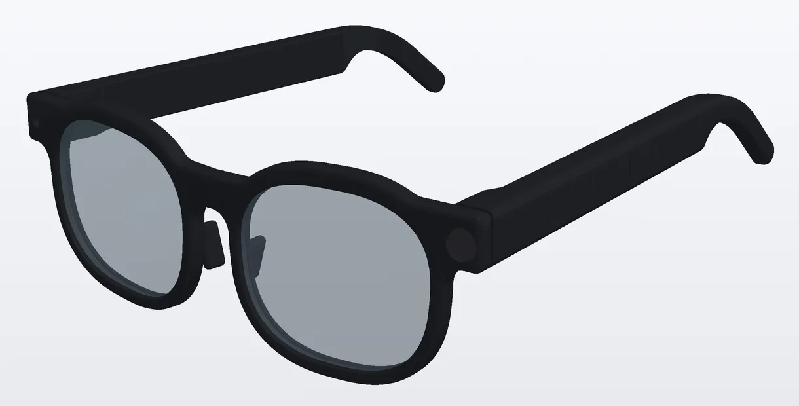
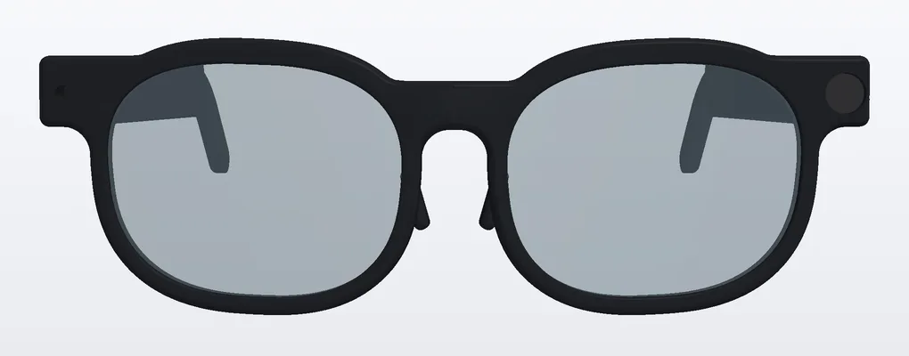
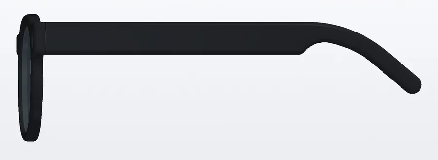
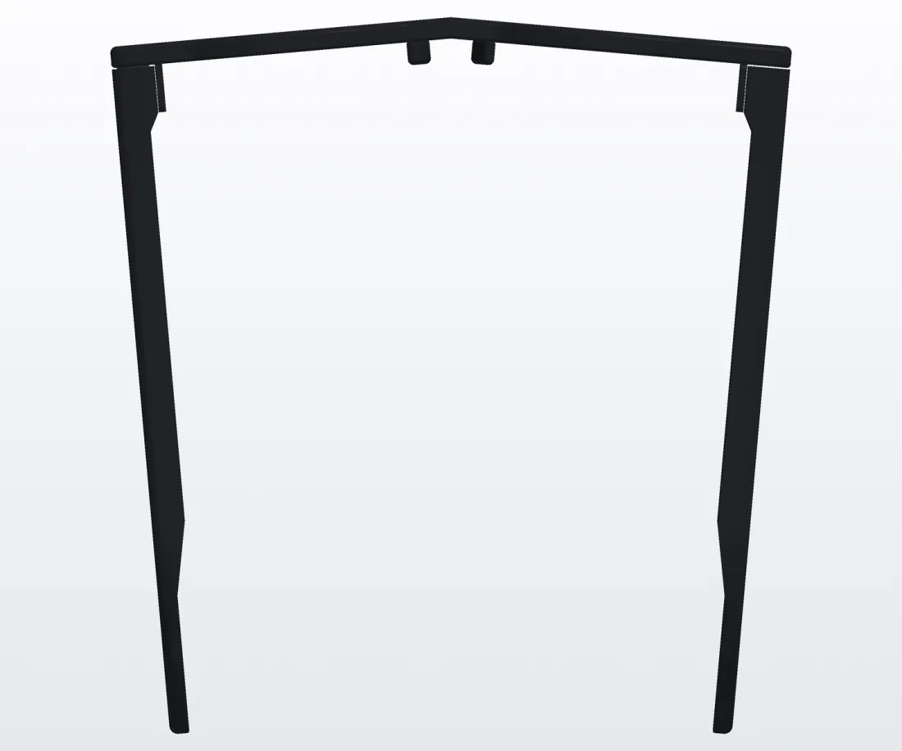

NoteIt hardware · prototype 0 · 13 November 2026
NoteIt Glasses
Ordinary-looking glasses that record a lecture or meeting and hand the audio to the NoteIt phone app, which turns it into notes, without losing any of it. The electronics are hidden in the arms: the board in the left, the battery cells in the right.
DESIGN FILES ONLY · NOTHING BUILT, PRINTED OR MEASURED YET
Views



How it works
Never loses audio
Audio is written to 128 MB of on-board flash (about 4 hours) before it is sent over Bluetooth. The phone acknowledges what it has received, and nothing is deleted until it has, so a dropped connection just means it catches up later.
Visible when recording
A light in the front is wired to the same power line as the microphones and camera. If they can record, the light is on, and no software can turn it off.
Built for lecture halls
Two digital microphones, 40 mm apart along the left arm, point forward at the speaker. Voice quality will be measured against a phone recording made at the same time.
Slim by design
To keep the arms thin, the board uses the bare ESP32-S3 chip with a chip antenna instead of a bulkier pre-certified radio module. That shrank the arm from 19.8 × 9 mm to 12.6 × 7.2 mm.
Specification
- Frame
- 147 mm wide; 52 × 41 mm soft-square lenses with a 19 mm keyhole bridge; rounded rims. Printed in nylon or resin, about 18 to 21 g.
- Board
- 10 × 82 mm, 4 layers, in the left arm. ESP32-S3 (Bluetooth LE 5, native USB), 128 MB NAND flash, battery gauge, charger.
- Audio
- 2 × PDM microphones, 40 mm apart, through 1 mm ports on the outer face of the arm.
- Camera
- OV2640-class module in the tip of the left arm, looking forward. Optional photo every 30 seconds.
- Power
- Two 110 mAh lithium cells in the right arm. About 3.7 h of audio, 3.2 h with photos. USB-C charging, about 2.5 h.
- Firmware
- Written and unit-tested on a computer (83 tests); not yet run on hardware.
Still to do
- Route the board (parts are placed and checked; copper tracks are not drawn yet) and have it reviewed by an electronics engineer.
- Print the frame and fit the board, cells and camera.
- Measure battery life, Bluetooth range and voice quality against a phone; tune the antenna.
Erwann de Silguy · NoteIt · noteitco.com